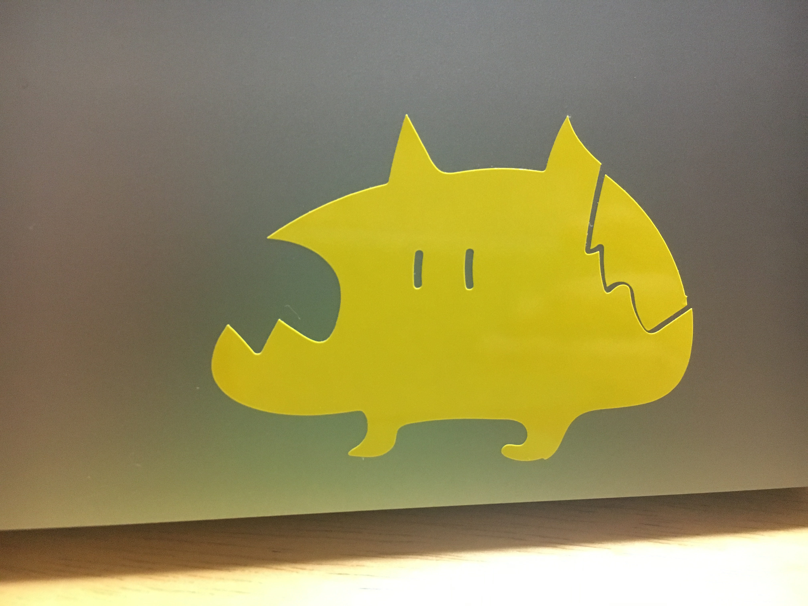

カッティングプロッター

手順
作りたいサイズにカッティングステッカーシールを用意する。
カッティングステッカーシールをカッティングマシンにセットする。
イラレのデータを書き出す。カットしたいオブジェクトがパスデータ
になっているか確認する。そしてメニューバーからファイル cutting
master3 cutting master3に送信する。
カッティングプロッタウィンドウを選択しCE6000-60の
ステータス レディを確認して送信を選択
加工が終わったらカス取りをする
貼り付ける
感じたこと
レーザーカッターと手順はあまり変わらないんだとわかった。
細かい部分を切り離すのが大変だった。
反省点を生かしていろんな機械を使いこなせるようになりたい。